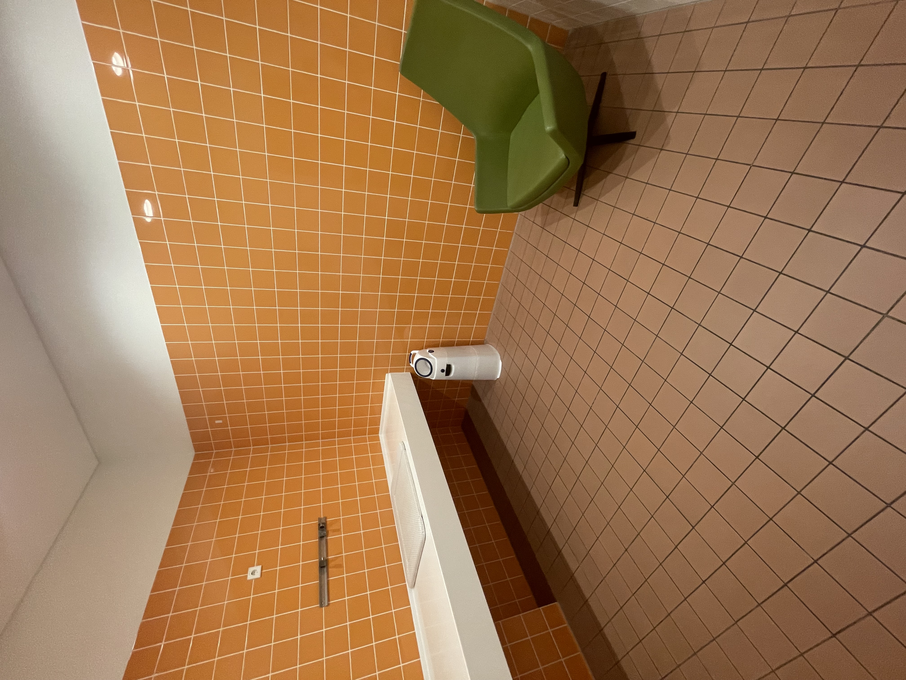
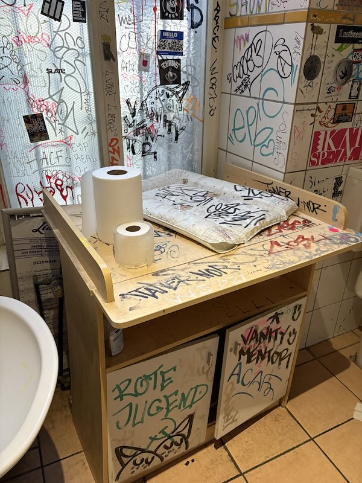
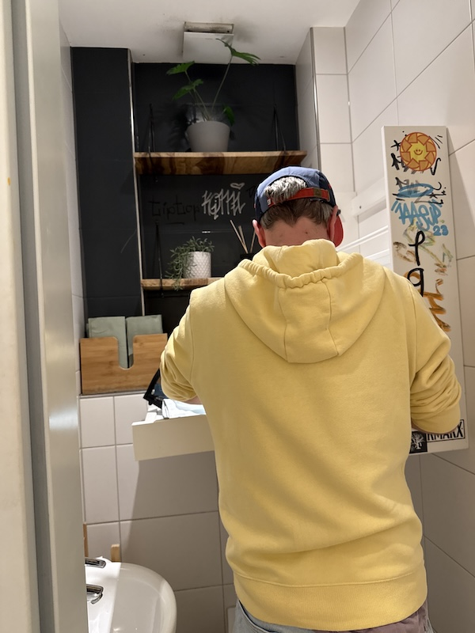
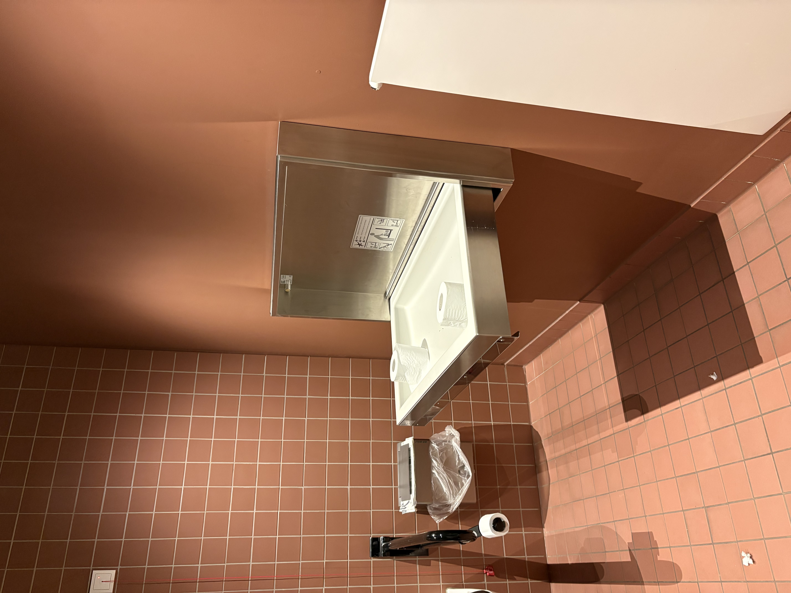
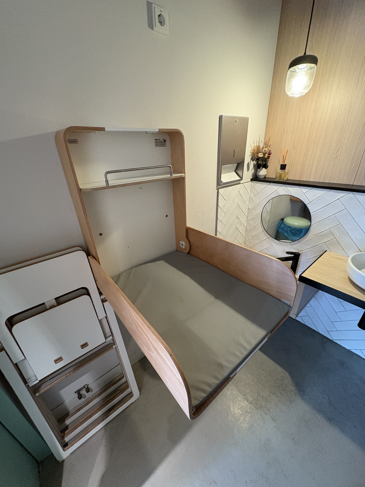

5/5“There is a dm downstairs, but if you are upstairs, want some privacy and maybe sit down to feed, that’s a great option and it's squeaky clean, large and in good condition.”
Photos and reviews from our community. Submit a place and help other parents.

5/5“There is a dm downstairs, but if you are upstairs, want some privacy and maybe sit down to feed, that’s a great option and it's squeaky clean, large and in good condition.”

4.5/5“It seems dirty and messy, but actually it is very clean and there is lots of space for a baby, a stroller, to leave your stuff while changing etc. Very good.”

4/5“Decent and clean, but very cramped and installed too high. Bad for short parents.”
Tested by parents. Rated by the community. See the full Berlin list.

5/5Top-rated community pick for changing a diaper in Berlin.
 5/5
5/5
Parent-rated favorite with family-friendly facilities.

4.5/5Highly rated spot for parents around Friedrichshain.
*The ranking is based on user-submitted ratings on cleanliness, accessibility and overall experience.
Where can I find baby changing tables in Berlin?
You can find baby changing tables across Berlin: in shopping malls, restaurants, museums, and public restrooms. On FixMyDiaper, there are more than 160 verified locations, with new ones added regularly by parents.
Do Berlin cafés or restaurants usually have changing tables?
Some do, but it’s not universal. The good news is that Berlin is getting more family-friendly every year.
Can I add a new location to FixMyDiaper?
Yes! FixMyDiaper is built by parents and caregivers. You can submit new locations directly on the website.